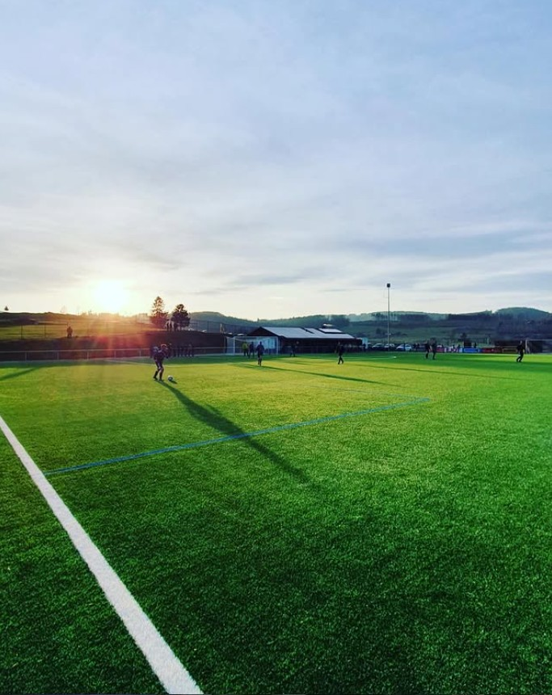

VfB Banfe · Über uns
Der VfB Banfe 1920 e.V. wurde am 4. Juni 1920 gegründet – kurz nach dem Ende des Ersten Weltkriegs, als junge Männer in Banfe einen Fußballclub ins Leben riefen. Was mit einem mühsam per Fahrrad aus Herborn geholten Lederball begann, ist heute ein lebendiger Sportverein mit rund 500 bis 600 Mitgliedern in zwei Abteilungen: Fußball und Turnen.
Die ersten Jahrzehnte prägten wechselnde Sportstätten: vom improvisierten Spielfeld im Ilsetal über den hoch gelegenen „alten Sportplatz" auf dem Buchholz bis hin zum Sportplatz am Waldweg, der am 14. August 1932 eingeweiht wurde und bis heute die Heimat des VfB Banfe ist. 1987 begannen die Mitglieder in 4.017 freiwilligen Arbeitsstunden mit dem Bau des Sportheims, das 1988 eingeweiht wurde. Ein weiterer Meilenstein folgte 2008: die Eröffnung eines der ersten Kunstrasenplätze in Bad Laasphe.
Sportlich feierte der VfB Banfe über die Jahrzehnte viele Höhepunkte – von frühen Kreispokalsiegen in den 1940er Jahren über die Meisterschaft in der Kreisklasse 1975/76 mit anschließendem Aufstieg in die Bezirksklasse bis hin zu Jugendmeisterschaften in den 1990er und 2000er Jahren. Die Turnabteilung ergänzt seit Jahrzehnten das Angebot für alle Altersgruppen.
Verwurzelt in der Region Südwestfalen ist der VfB Banfe weit mehr als ein Sportverein – er ist ein Treffpunkt für Generationen, ein Ort für Gemeinschaft und ein verlässlicher Teil des gesellschaftlichen Lebens im Banfetal. Im Jahr 2020 feierte der Verein sein 100-jähriges Jubiläum.

Der Förderkreis VfB 1920 Banfe e.V. ist ein eigenständiger eingetragener Verein, der im Februar 2014 auf Initiative einiger Vereinsmitglieder gegründet wurde. Er verfolgt ausschließlich gemeinnützige Zwecke und stellt dem VfB Banfe – vorrangig für die Jugendarbeit und den Spielbetrieb – Mittel und Gelder zur Verfügung.
Die Einnahmen des Förderkreises stammen aus Mitgliedsbeiträgen, Spenden und Erlösen aus Veranstaltungen. Der Mindestbeitrag für Mitglieder beträgt 5,00 € monatlich und ist steuerlich als Spende absetzbar. Spendenbescheinigungen werden auf Wunsch ausgestellt.
Neue Förderkreismitglieder sind jederzeit willkommen. Insbesondere die Unterstützung der Jugendabteilung – von der Pflege des Kunstrasenplatzes über die Einkleidung der Mannschaften bis hin zur Ausrüstung mit Bällen und Trainingsutensilien – erfordert jedes Jahr erhebliche Mittel.
Ohne Schiedsrichterinnen und Schiedsrichter ist ein geordneter Spielbetrieb nicht möglich. Der VfB Banfe blickt auf eine lange Tradition aktiver Schiedsrichter zurück – vom langjährig geschätzten Werner Wickel, der bis in die damalige Regionalliga leitete, bis hin zu Heinrich Hirsch, der seit über 40 Jahren Spieltag für Spieltag auf heimischen Sportplätzen im Einsatz ist und 2019 im Rahmen der DFB-Aktion „Danke, Schiri!" geehrt wurde.
Über die Jahrzehnte haben viele Vereinsmitglieder die Pfeife übernommen und damit dem VfB in besonderer Weise gedient: Werner Neeb, Willi Kuppermann, Werner Roth, Ernst Klotz, Josef Hilgert, Wolfgang Bardehly, Horst Wagner, Michael Sinning, Melanie Schmidt, Markus Schmidt, Pierre Schneider und viele weitere.
Werde Schiedsrichter!
Du interessierst dich für Fußball und möchtest das Spiel aus einer anderen Perspektive erleben? Die Schiedsrichterausbildung dauert ca. 15–20 Stunden und schließt mit einer theoretischen und praktischen Prüfung ab. Als lizenzierter Schiri erhältst du Spesen, Fahrkostenerstattung und sogar kostenlosen Eintritt zu Bundesliga- und DFB-Pokalspielen.
Sprich uns einfach an – wir melden dich beim nächsten Anwärterlehrgang im FLVW-Kreis Siegen/Wittgenstein an.